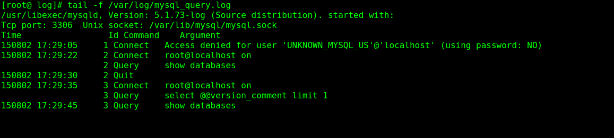

HELLO,
MY NAME IS XuJianGuo AND THIS IS MY BLOG
开启通用日志，追踪SQL
通用日志
通用日志： 就是general log，默认是关闭状态，由于general log会记录用户的所有操作，其中包含增删查改等信息，在并发操作大的环境下会产生大量的信息而 导致不必要的磁盘IO，会影响MySQL的性能。
所以，general log的作用期是在debug的时候，通过开启general log，查看执行的SQL语句。上线的时候，就关闭general log。
查看通用日志的信息
跟通用日志相关的就两个变量的信息，一个是general log的状态，有ON和OFF两种，接着就是general log的日志文件的路径，通过查看日志的内容 来追踪我们的SQL。
mysql> show variables like '%general_log%';
+------------------+--------------------------+
| Variable_name | Value |
+------------------+--------------------------+
| general_log | OFF |
| general_log_file | /var/log/mysql_query.log |
+------------------+--------------------------+
2 rows in set (0.00 sec)
修改general log配置
修改general log的日志文件路径： 在MySQL的核心配置文件中log这个变量设置的就是general log的文件路径，我们可以修改这个配置来设置日志文件的路径。
[root@ /]# vim /etc/my.cnf
[client]
#password = your_password
port = 3306
socket = /var/lib/mysql/mysql.sock
[mysqld]
port = 3306
socket = /var/lib/mysql/mysql.sock
skip-locking
key_buffer_size = 16M
max_allowed_packet = 1M
table_open_cache = 64
sort_buffer_size = 512K
net_buffer_length = 8K
read_buffer_size = 256K
read_rnd_buffer_size = 512K
myisam_sort_buffer_size = 8M
log=/var/log/mysql_query.log
更改general log的状态
mysql> set global general_log = ON;
Query OK, 0 rows affected (0.00 sec)
mysql> show variables like '%general_log%';
+------------------+--------------------------+
| Variable_name | Value |
+------------------+--------------------------+
| general_log | ON |
| general_log_file | /var/log/mysql_query.log |
+------------------+--------------------------+
2 rows in set (0.00 sec)
可能遇到的问题
- 修改后没有生效
- 日志文件没有新建或没有文件中没有信息
这个时候需要重启MySQL（service mysqld restart），这样配置才会重新加载。
这个可能是由于MySQL用户组的权限问题，我们手动创建对应的文件，并且赋予MySQL读写的权限
[root@ log]# ll mysql_query.log
-rw-r--r-- 1 root root 0 Aug 2 17:23 mysql_query.log
[root@ log]# chown mysql:mysql mysql_query.log
[root@ log]# ll mysql_query.log
-rw-r--r-- 1 mysql mysql 0 Aug 2 17:23 mysql_query.log[root@ log]# touch mysql_query.log
实时跟踪
通过tail命令实时跟踪日志文件的变化情况，在一个客户端执行SQL，立刻在日志中发现。
